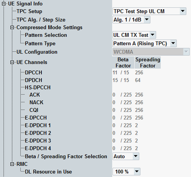

The "UE Signal Info" parameters describe properties of the measured uplink WCDMA signal. The parameters are common measurement settings, i.e. a parameter has the same value in all WCDMA measurements for which it is relevant (e.g. TPC measurement and multi-evaluation measurement).
While the combined signal path scenario is active, all parameters display values determined by the controlling signaling application. Some parameters are not displayed for standalone measurements.

Selects the TPC setup (expected) to be executed during the measurement.
If the combined signal path scenario is active, this parameter is controlled by the signaling application and selects the TPC setup to be executed.
If the standalone scenario is active, this parameter selects the TPC setup which is expected to be executed, for example, via the GPRF generator using a suitable ARB file.
For standalone measurements in monitor mode, you can select any monitor mode TPC setup. The effect of selecting, for example, "Closed Loop" or "Phase Disc Up" is the same.
The available setups depend on the selected "UL Configuration". The setup "DC HSPA In-Band Emission" is only available for the signal with dual carrier HSUPA.
For background information, see "TPC Setups".
In the standalone (SA) scenario, this parameter is controlled by the measurement. In the combined signal path (CSP) scenario, it is controlled by the signaling application.
It selects the power control algorithm (1 or 2) and the TPC step size (1dB or 2dB) for TPC setups that do not use fixed values.
For more details and remote commands, refer to the description of the WCDMA signaling application.
This parameter is available in the combined signal path (CSP) scenario only. It is controlled by the signaling application.
Remote command:Configures parameters for the TPC setup "TPC Test Step UL CM".
Selects the transmission gap pattern for the UL compressed mode measurement.
This parameter is available in the combined signal path (CSP) scenario only. It is controlled by the signaling application.
Selects the compressed mode pattern to be executed during the TPC measurement in the TPC setup "TPC Test Step UL CM".
If the standalone scenario is active, this parameter selects the CM pattern which is expected to be executed, for example, via the GPRF generator using a suitable ARB file.
Note that the wrong CM configuration in the signaling application leads to the UL CM trigger timeout.
If the combined signal path scenario is active, this parameter is controlled by the signaling application.
For background information, see "TPC Setups".
In the standalone (SA) scenario, this parameter is controlled by the measurement. In the combined signal path (CSP) scenario, it is controlled by the signaling application.
This parameter is common measurement settings, i.e. it has the same value in all measurements (e.g. TPC measurement and multi-evaluation measurement).
For parameter descriptions refer to the multi-evaluation measurement, "UL Configuration".
This parameter is common measurement settings, i.e. it has the same value in all measurements (e.g. TPC measurement and multi-evaluation measurement).
For parameter descriptions refer to the multi-evaluation measurement, "UE Channels".
In TPC measurement, the settings are, for example, used to determine the expected power step size for the "Change of TFC" limits.
This parameter is only displayed while the combined signal path scenario is active and if option R&S CMW-KS410 is available.
For measurement mode "Change of TFC" set 50 % to generate a discontinuous DPDCH. For all other measurement modes, 100 % is recommended to avoid undesired power steps.
For more details and remote commands, refer to the description of the WCDMA signaling application.
Remote command: